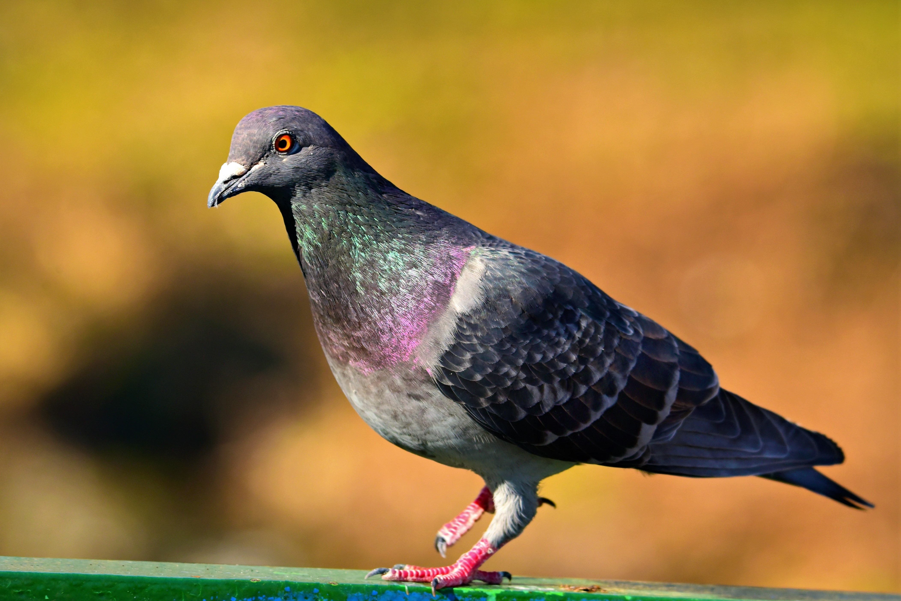

Interesting facts about turtles
- Turtles live all over the world.
- The largest turtle weighs more than 1000 pounds!
- Turles have a second shell.
- Turtles aren't silent

Interesting facts about pandas
- Pandas have excellent camouflage for their habitat.
- Their eyes are different than normal bear eyes.
- Cubs are well-protected in their first month.
- They spend a lot of their day eating.

Interesting facts about cats
- Cats can jump 5 times their height.
- A house cat is genetically 95.6% tiger.
- While us humans have 206 bones, cats on average have 244.
- Adult cats have 30 teeth, while kittens have 26.

Interesting facts about chameleons
- Chameleons can blend into their environment to avoid danger.
- Their eyesight helps them to catch prey.
- They can also see ultraviolet light, which humans cannot.

Interesting facts about pigeons
- Pigeons have excellent hearing abilities. They can detect far lower frequencies than humans can.
- They can fly up to altitudes over 6000 feet.
- A few centuries ago, pigeon droppings were considered extremely valuable.